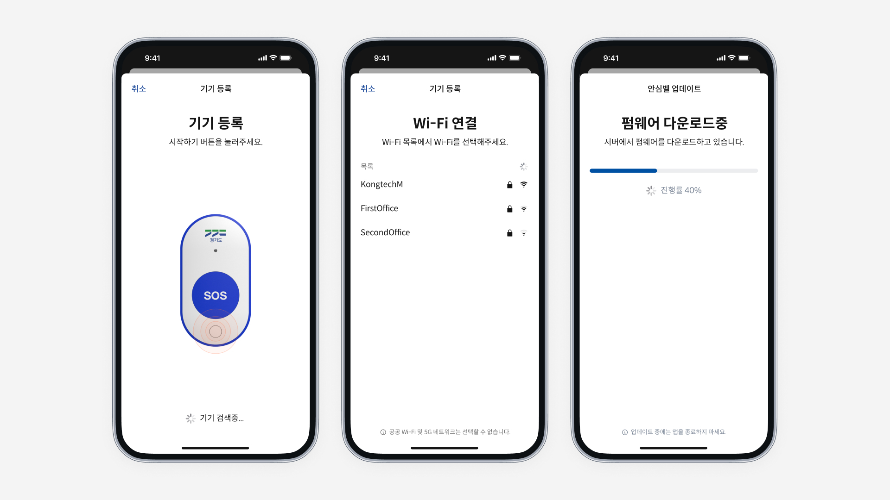

모두의 안심벨은 경기도 내 1인 점포나 1인 거주자 등 범죄나 사고에 취약한 대상에 긴급한 상황 발생 시 신속하게 대응 가능한 보조 신고 서비스입니다. 모두의 안심벨 서비스는 모바일(iOS/Android)과 하드웨어 기기를 통해 신고가 이루어지고 PC웹 화면에서 접수된 신고가 관리됩니다. 경기도와 함께한 이번 프로젝트는 서비스 전체의 시스템을 설계하고 각 플랫폼 별 UX/UI디자인을 진행했습니다.
긴급 상황에 빠르게 대응 가능한 신고체계
안심벨의 신고체계는 경찰과 협력하여 즉각적으로 긴급 상황에 대응할 수 있도록 설계되었습니다. 안심벨 기기를 통해 신고 버튼을 누르면 신고 신호가 등록된 휴대폰을 통해 전달되고, 신호를 수신한 휴대폰은 사전에 등록된 신고 정보와 함께 긴급 신고를 경찰에 전송합니다.
블루투스(BLE)와 메쉬 네트워크를 활용한 통신
안심벨 기기는 블루투스 통신(BLE)을 통해 기기 등록 및 신고가 이루어집니다. 1차적인 통신이 불안정한 경우에도 메쉬 네트워크를 통해 근처의 다른 안심벨을 찾고, 발견된 다른 사용자의 휴대폰으로도 신호를 전달하기 때문에 정상적인 신고가 가능합니다.
모바일 앱을 통한 신고 및 기기 관리
모두의 안심벨 모바일 앱은 사용할 기기를 등록하고, 실제 신고 시 현재 상태를 확인하거나 잘 못 신고된 내용을 취소할 수 있습니다. 또 등록된 기기 정보 확인과 통신 상태 점검, 펌웨어 업데이트 등 기기를 관리할 수 있는 기능도 함께 제공합니다.

실시간으로 대응 가능한 신고 접수
안심벨을 통해 전송된 긴급 신고는 경찰뿐 아니라 관제센터 및 대응기관에 함께 접수됩니다. 접수된 신고는 관리자 화면을 통해 신고 위치 및 신고 정보를 실시간으로 확인할 수 있어 담당자의 빠른 대응이 가능합니다.
대시보드로 한눈에 보는 서비스 현황
관리자 화면의 대시보드는 안심벨 서비스의 사용자 및 신고에 대한 현황을 한눈에 확인할 수 있습니다. 각 영역은 데이터 특성에 맞는 차트로 구성되었고, 이를 통해 얻은 여러 인사이트들은 서비스 개선에 활용되었습니다.
서비스 운영을 위한 사용자 관리
안심벨 서비스를 사용하기 위해 등록된 사용자들은 사용자 관리 화면을 통해 관리됩니다. 서비스를 운영하는 CS 담당자들은 사용자에 대한 데이터를 확인하거나 수정/삭제, 엑셀 다운로드 등을 통해 각종 서비스 문의에 대응할 수 있습니다.
정부 기관과 함께한 프로젝트
경기도와 함께 진행한 이번 프로젝트는 일반적인 프로젝트와는 성격이 많이 달라 새로운 도전이었습니다. 주어진 기능적 요구사항들을 바탕으로 제한적인 기획/디자인이 진행됐고 GS인증과 웹 접근성 인증과 같은 소프트웨어 인증도 함께 대응해야 했습니다. 여러 이해관계자들의 각기 다른 비즈니스적 측면도 함께 고려하며 프로젝트가 진행되었기에 많은 어려움이 있었지만, 그 중심에서 여러 의견을 조율하고 프로젝트를 관리하며 다양한 이슈들을 대응하는 경험을 학습할 수 있었습니다.